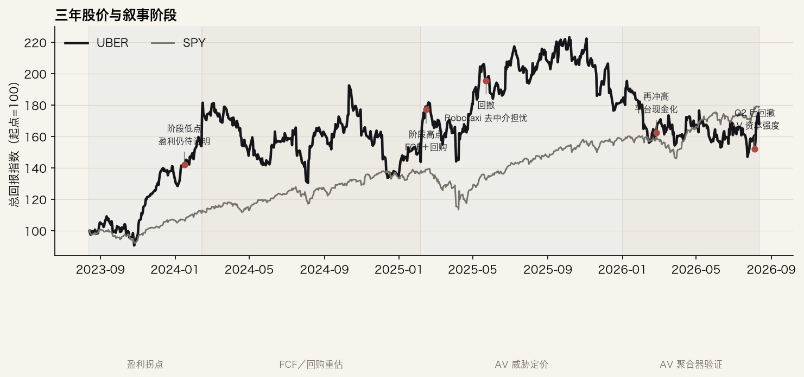
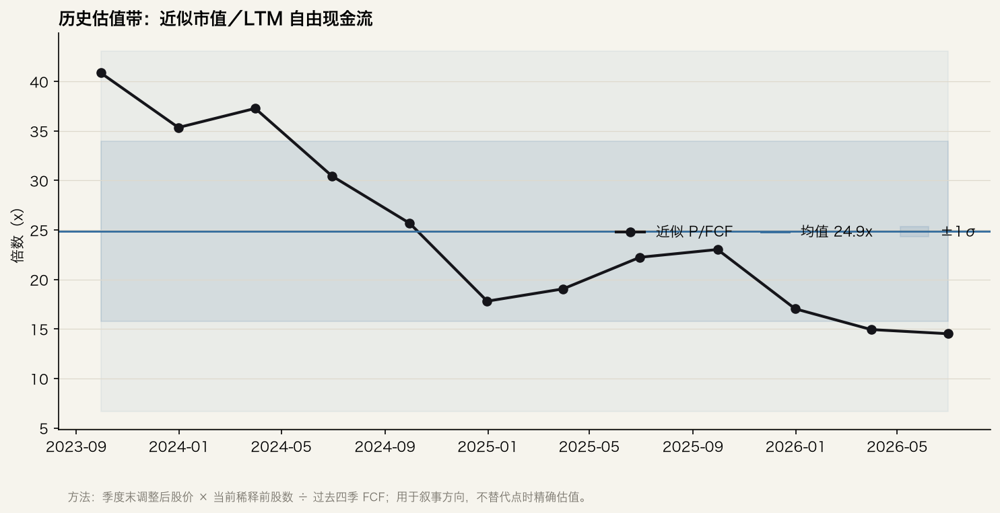
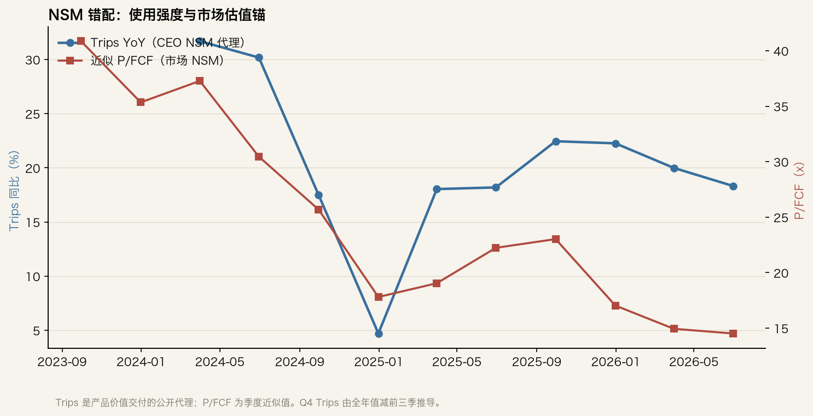

Ticker: UBER
Date: 2026-08-13
Classification: 进入下一阶段研究（AV 错锚专项）
结论：值得进入下一阶段，但研究对象不是“Uber 是不是好公司”，而是“市场是否把 AV 的产业结构押错了”。当前股价 75.36 美元，对应约 15.2 倍 TTM P/FCF；Goldman 与 Bernstein 的最新目标价分别为 110／95 美元，隐含 46%／26% 上行。市场正在用 AV 去中介风险 + 资本强度压低现金流倍数，而产品侧仍交付 18% 的 Trips 增长、16% 的 MAPC 增长和超过 100 亿美元的 TTM FCF。若 AV 最终呈多供应商格局，Uber 的需求聚合、混合运力与车队商业化层可能比今天更值钱；若 Waymo／Tesla 等垂直整合者控制用户入口，或 Uber 的逾 100 亿美元投入无法被第三方金融化，则低倍数是合理的。
这不是无条件看多。Q2 的 Delivery 增长强、Mobility 收入受英国会计模式变化干扰，但 AV 投资的损益与现金流轮廓尚未披露；Waymo 计划 2028 年在 Austin／Atlanta 推自有 app，也说明去中介不是假想敌。下一阶段应围绕城市级 AV 单车利用率、独立 app 分流、跨平台 cohort 和资产承诺回报率做可证伪研究。
| 来源类别 | 最新来源日期 | 新鲜度 | 距报告日 |
|---|---|---|---|
| 卖方报告 | Goldman 2026-08-06；Bernstein 2026-08-05 | 当前 | 约 1 周 |
| 电话会 | 2026Q2，2026-08-05（FMP 完整稿） | 当前 | 8 天 |
| SEC 申报 | 2026Q2 10-Q，2026-08-05 | 当前 | 8 天 |
| 买方／运营者 | CEO 访谈 2026-06-03；独立历史机制材料至 2025-11 | 管理层当前；独立材料偏旧 | 约 2–9 个月 |
| 新闻／播客 | 新闻至 2026-08-07；Podwise 检索 2026-08-13 | 当前 | 0–6 天 |
| 项目 | 最新情况 |
|---|---|
| 市场数据 | 收盘 75.36 美元；52 周 65.41–101.99 美元；市值 1,534 亿美元；企业价值约 1,633 亿美元。数据：FMP，2026-08-13。 |
| 经营与现金 | 2026Q2 收入 141.9 亿美元（+12% YoY）、总预订额 580.2 亿美元（+24% 报告口径／+22% 固定汇率）、Trips 38.67 亿次（+18%）、MAPCs 2.08 亿（+16%）；TTM FCF 约 101 亿美元。 |
| 技术面 | 过去 30 个交易日上涨约 3.7%；8 月 12 日收盘仍高于 EMA12／26／50，MACD 为正且高于信号线，RSI 55.9。财报后波动率扩张，趋势偏多但 78–79 美元附近出现回吐。 |
| 持仓结构 | 空头约占流通股 2.41%、short ratio 2.89；机构持股约 85.0%（yfinance，2026-08-13）。FMP 流通比例 99.47%。近期 Form 4 主要为 RSU 归属和代扣税，并非清晰的公开市场买入信号。 |
| 关键指标 | 值 | 含义 |
|---|---|---|
| 双产品用户占比 | 20% | 仅五分之一消费者同时使用 Rides 与 Eats，但该群体增长约为单产品用户的 1.5 倍；交叉渗透仍有空间。 |
| AV 当前渗透 | <0.5% | AV 每周数十万次 vs Uber 约 3 亿次；短期财务影响小，估值争议主要来自终局结构。 |
| TTM FCF／收益率 | 约 $10.1bn／6.6% | 现金化已真实发生，但需扣看 SBC、保险准备金和未来 AV 资本承诺。 |
| AV 城市／单车利用率 | 7 → 15；约 25–30+ Trips/日 | 城市上线与单车每日行程是聚合器价值最直接的领先验证变量，均为管理层口径。 |
市场最可操作的锚是 P/FCF／EV-EBITDA，不是收入倍数。FMP 给出的 TTM P/FCF 为 15.2 倍、EV/EBITDA 为 20.4 倍；本报告的季度近似序列显示 P/FCF 从 2023 年末约 35 倍压至 2026Q2 约 14.5 倍，尽管 Trips 仍以高双位数增长。Goldman 用 19 倍 NTM+1 GAAP EBITDA 与 15 倍 NTM+4 EV/(FCF-SBC) 各占 50% 得出 110 美元；Bernstein 将 AV 风险写入更低终值倍数，以 18 倍 NTM P/FCF 与 DCF 为主得出 95 美元。市场并非否认当前现金流，而是在给 AV 终值与资本强度折价。
| 公司 | 市值 | EV/EBITDA | P/FCF | 最新季度收入 YoY | FCF/OCF |
|---|---|---|---|---|---|
| UBER | $153bn | 20.4x | 15.2x | 12.2% | 97.0% |
| DASH | $93bn | 48.9x | 38.6x | 35.6% | 84.7% |
| ABNB | $107bn | 32.8x | 22.0x | 16.5% | 100.1% |
| BKNG | $164bn | 15.6x | 17.2x | 8.1% | 96.8% |
同业并不完美：DASH 是配送平台，ABNB／BKNG 是资产轻型旅行市场。表中 FMP 标准化 TTM 口径适合相对定位，不应替代业务分部与 SBC 调整后的精确估值。UBER 相对 DASH／ABNB 显著折价，但与成熟 BKNG 接近，说明市场把它更多看作成熟现金流平台而非仍在扩张的网络。



| 视角 | 判断 |
|---|---|
| CEO NSM | 可靠完成的 Trips 与频次。最接近“产品创造了多少价值”的公开指标；Q2 Trips +18%，由 MAPC +16% 与每 MAPC 月均 Trips +2%共同驱动。 |
| 长期投资者 NSM | 增量贡献利润／FCF（扣 SBC）及其对网络密度的回报，辅以双产品 cohort 留存、单车利用率与广告利润。它衡量使用如何转化为定价权、组织依赖和现金。 |
| 市场共识 NSM | P/FCF／EV-EBITDA，并用 AV 终值风险调整。卖方下调目标主要不是 Q2 需求崩坏，而是 AV 去中介与资本强度折价。 |
| 错配类别 | 健康滞后，但尚未证实。Trips、跨平台渗透和 FCF 改善快于估值锚；然而 Uber 正用资产负债表推动 AV，若不能金融化，错配会迅速变成危险分歧。 |
更快、更可靠、更便宜的出行／配送 → 更高使用频次与首用转化 → Rides、Eats、杂货与 Uber One 交叉采用 → 供需密度、商家流量与 AV 单车利用率提升 → 更低接驾空驶／更高广告转化／更稳定留存 → 增量贡献利润、FCF 与回购能力
上行由两部分构成：现金流继续按高双位数增长，以及 AV 折价收窄。仅回到卖方 95–110 美元区间就对应约 26%–46% 上行；FMP 目标价共识 107.60 美元对应约 43%。下行不是普通的季度 miss，而是终值重写：独立 AV app 抽走高质量需求、Uber 被迫降低抽成并承担车队资本。由于最新 52 周低点 65.41 美元仅较现价低 13%，历史交易区间并未呈现对称的“安全垫”；因此需在验证前控制仓位假设。
Classification: 进入下一阶段研究（AV 错锚专项）。
Wrong anchor：成立的可信度中等偏高。市场用“AV 技术赢家去中介”解释终值，而 Uber 的实际竞争资产可能是多供应商商业化、混合运力调度与跨品类需求，不是数字司机本身。Material upside：成立；当前卖方框架给出 26%–46%上行，且若 FCF-SBC 持续增长，估值无需回到历史高位也能产生组合级回报。Clear validation path：成立；未来 2–4 季可观察 15 城上线、AV 每车每日 Trips、Uber 与独立 app 的城市份额、双产品用户增速、AV P&L／现金流披露及第三方金融化比例。三项门槛均达到，但论点脆弱点清晰，因此应推进专项研究而非直接定性为“质量复利股”。
限制：未来预测是市场预期而非事实。历史 P/FCF 图使用当前股数近似季度市值；买方独立材料的新鲜度弱于管理层／卖方；新闻本地源未保留原始 URL，但保存了全文与 entry_id。报告用于筛选是否值得深挖，不构成投资建议。